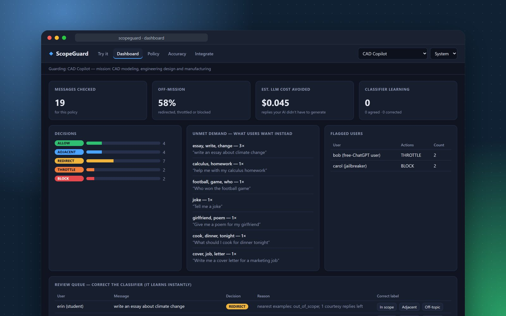
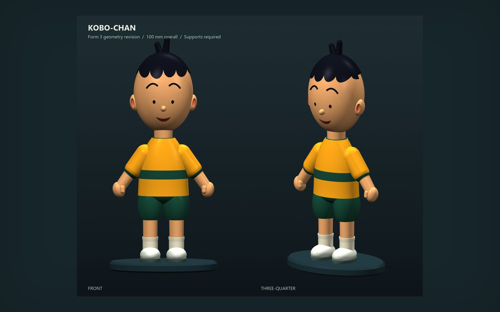

Last shipped 06 Nov 2026 · Retrace
Build log.
42 builds · newest first
Engineering tools, CAD models and side projects I’ve shipped. Get one short email when the next one lands.
No spam · unsubscribe in one click · past issues · RSS
- Dwg no.
- JL-002
- Builds
- 42
- Rev
- 26.11.06
- Cadence
- When it ships
Latest build

Retrace
Find the AI, prompt, model and settings behind an image, text, website or chatbot API.
Open project →All builds #41 → #13
- #4106 Nov 2026
Millennium Digest
Weekly arXiv digest on the seven Millennium Prize problems.
Open →
- #4006 Nov 2026
Peakwise
Neutral 60-second check: does a battery pay back for a Taiwan factory? Real tariff, subsidy and a quote checker.
Open →
- #3906 Nov 2026
Hearthwood
Medieval low-poly village prototype (Unity 6 + URP): quests, dialogue, NPC AI and a playable browser preview.
Open →
- #3805 Nov 2026
Cairn
A second brain inside your repo: ideas wall, task board, decision log and AI context pack, all as plain Markdown.
Open →
- #3705 Nov 2026
Jeda
Jeda, ruang hening setiap iman: a quiet space for every faith, offline-first and installable as a PWA.
Open →
- #3605 Nov 2026
The Morning Paper
The Morning Paper, web edition: curated news, a stock desk, and a portfolio with alerts that sync once you sign in.
Open →
- #3505 Nov 2026
Nudge
See which friends you've been leaving on read: local-only analysis of your chat exports, plus a weekly nudge.
Open →
- #3405 Nov 2026
Undanu
Digital wedding invitations for Indonesia with RSVP, guest tracking, donations and QR check-in.
Open →
- #3305 Nov 2026
VALE
A 3D fairy world: a first-person explorer collecting five Lumenshards to restore a fading realm (Unity 6 + HDRP).
Open →
- #3205 Nov 2026
Together
Couples' life plan: roadmap with both ages, goals, money, check-ins. Encrypted partner sync, reminders, offline.
Open → - #3104 Nov 2026
Buddy
AI buddy next to your mouse: hold Ctrl+Alt+Space, ask about your screen, and it points at the answer or does it for you.
Open →
- #3004 Nov 2026
EarlyStar
Find GitHub repos before they trend: ranked by stars actually gained, with real activity, Trending history and a free API.
Open →
- #2903 Nov 2026
Haru
Your days as a cozy little town: a weather-lit diorama, photo, note and walk for each day, plus a screenshot tidy-up.
Open →
- #2802 Nov 2026
ScopeGuard
Stop users turning your business AI into a free ChatGPT: allow, steer, redirect or block every message.
Open →
- #2702 Nov 2026
CrewCup
Office coffee for teams: one-tap usual, group runs, company allowance, badge pickup at partner cafés and rewards.
Open →
- #2602 Nov 2026
shiphub
Pinterest for app ideas with forum threads: save, discuss, fork, claim and ship ideas, with GitHub sign-in.
Open →
- #2502 Nov 2026
Sortie
File organizer with fly-into-folder animations, a vacuum for deletes and an AI assistant that plans before it acts.
Open →
- #2402 Nov 2026
KiniBuka
Find UMKM stalls open right now: live status, branches, bazaars, map, follow alerts and order-ahead via WhatsApp.
Open →
- #2302 Nov 2026
Rewind
Remember the shows streaming forgot: share memories and quotes, track where a series can still be watched.
Open →
- #2201 Nov 2026
Photo2CAD
PRD + six reference photos to a validated STEP (.stp) CAD model via an LLM-written CadQuery program - a deployable service.
Open →
- #2131 Oct 2026
Teman Sehat
GERD companion in Bahasa Indonesia: reminders, diet & fitness without fasting, acne care. Desktop, Android, iPhone.
Open →
- #2028 Oct 2026
Pips
Desktop pet + Pomodoro for Windows — 51 animals, friends, skill battles, a Strava-style Focus Trail and Phone Trail, 4 languages.
Open →
- #1928 Oct 2026
Vitals
Device health copilot: desktop apps for Windows, Mac and Linux; Android and iPhone apps check the phone itself. Undoable cleaning.
Open →
- #1827 Oct 2026
PLM AML Approval Assistant
Automates a PLM part-approval workflow in Edge — final or conditional — and stops before Submit for a human check.
Open →
- #1727 Oct 2026
Lingua
Universal language helper for Windows, iPhone and Android: text, pictures and live captions, with local AI and offline fallback.
Open →
- #1601 Oct 2026
Airiz Motor
AIRIZ motor test console for Windows, Android, iPhone and web: USB/Bluetooth jog, remote control and live device checks.
Open →
- #1501 Oct 2026
3D Models Library
41 landmark and character miniatures as STL/STEP, including a 100 mm Kobo-chan figurine revised for Form 3 SLA.
Open →
- #1401 Oct 2026
Glow
Four AI apps, one free account — GlowLead plans, GlowChat compares models, GlowRoom researches, GlowNews briefs you on AI news.
Open →
- #1301 Oct 2026
Fade
Barber marketplace with haircut shorts — live and free: book barbers, pay them directly at 0% fee, earn from your shorts.
Open →
Next build drops in your inbox.
One email per ship. Nothing else.